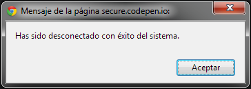
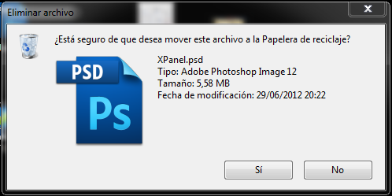
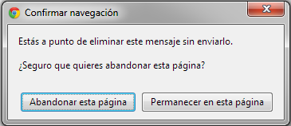
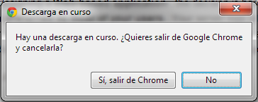
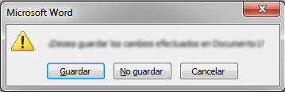
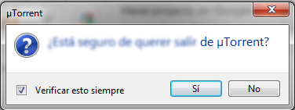

Ok y Cancelar no es suficiente
A diario nos encontramos con cuadros de diálogo que nos intentan ayudar a tomar decisiones. El problema es que muchas veces nos inducen más a cometer errores que a solucionarlos. Nadie va a leer tus cuadros de texto, es lo primero que tenemos que pensar para conseguir centrar la atención de un usuario de manera efectiva.
Demasiadas palabras
Al mostrar un cuadro de diálogo en una web o una aplicación, intentamos centrar la atención del usuario en un hecho que a nuestro juicio es importante. Este puede ser la confirmación de borrar algún archivo, cerrar sesión, control de errores... (Este último lo trataremos con más profundidad en otro artículo).
Como hemos dicho antes, debemos pensar que estos cuadros no se leerán en la mayoría de los casos. Sólo tenemos que pensar cuando a nosotros nos aparece uno, ¿qué es lo primero que hacemos? ¿en qué nos centramos?. La respuesta la tenemos en donde tenemos que hacer click: los botones.
Lo primero que hacemos con un cuadro de texto es mirar las opciones que nos da. Si solo podemos aceptar y no es de una aplicación importante , ¿para qué leerlo?, ya sabemos donde tenemos que pulsar.

Has salido con éxito del sistema
Los botones nos guían
Observemos estos cuadros de texto:

Borrar un archivo en Windows 7
Ahora observemos estos otros:

Cerrar pestaña en Chrome

Salir de Chrome con descarga activa
¿Cuál de estos dos grupos cumple mejor el objetivo de ayudar al usuario? Para verlo más claro vamos a darle una vuelta a los cuadros de diálogo siguientes:

Salir sin guardar en Microsoft Word

Salir de Utorrent
Así es como muchos usuarios ven los cuadros de diálogo. ¿Cuál de estos dos últimos ofrece más información? El de Microsoft y es que la mejor práctica a la hora de mostrar un cuadro de diálogo es escribir el verbo de la acción que se va a realizar en el botón.
De esta manera se muestra mucha más información al usuario que con un "Sí/Ok" o "No/Cancelar", o con distinto posicionamiento de los botones. De un vistazo captamos una parte del texto del diálogo, pero lo que realmente leemos al completo es el propio botón.
Uno de nuestros objetivos es ayudar a nuestros usuarios a seguir de una manera fácil el progreso de nuestra aplicación. También debemos pensar que la información que contengan estos cuadros debe de ser relevante al usuario para evitar que este los ignore.
Por ejemplo, el de Utorrent que está arriba aparece cuando haces click con el botón derecho encima de su icono en la barra de tareas y seleccionas "Salir". ¿Es necesario preguntarme esto? ¡¿No he hecho ya lo suficiente cómo para saber que te tienes que cerrar?!, y así, con multitud de aplicaciones.
Los pequeños detalles son los que construyen las grandes ideas. Cada pequeña modificación a nuestra manera de diseñar, programar, mostrar el contenido... ayuda a construir esa experiencia de usuario que tanto buscamos en nuestros proyectos, o que en su defecto, necesitamos buscar.